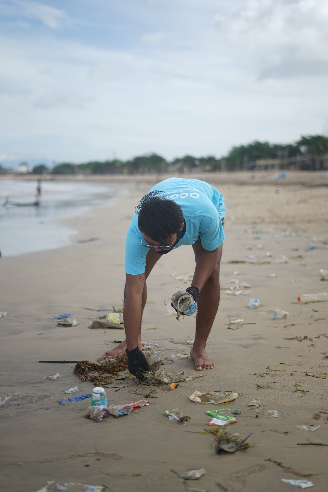

- Make sure your trash is properly secured
- Buy products that use less wasteful packaging
- Start carrying and using reusable bottles and cups
- Inform friends, family, and colleagues on the harms littering causes
- Encourage local business to keep trash cans or ash trays outside their stores
- Report littering to the proper authorities
- Attended local clean up days and events
- Encourage smokers to properly dispose of their cigarette butts
- Call your local representatives and encourage them to take a stronger stand against littering
- Bring a bag to pick-up litter while on walks
- Consider teaming up with friends or family to adopt a highway